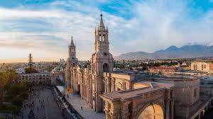

Historia de Arequipa

Origenes
Se estima que hubo vida humana en la región de Arequipa desde hace por lo menos unos 9 mil años antes de Cristo. Estas consideraciones están vinculadas a que en los Petroglifos de Toro Muerto se hallaron numerosas evidencias arqueológicas de la estadía de habitantes en ese lugar.
Los primeros pueblos en vivir y desarrollarse dentro de la zona que hoy conocemos como la región de Arequipa fueron los collaguas, chimbas, cabanas y yorabayas.
Todos estos grupos eran nómadas que se trasladaban a distintos sitios en busca de alimentos. Se dedicaban especialmente a la caza, la pesca y la recolección de frutas y hortalizas. También construyeron canales de riego y practicaron avanzadas técnicas, para su época, de agricultura.
La llegada de los incas

Como en todo el actual territorio peruano, la influencia de los incas no fue la excepción en la geografía arequipeña. En el año 1170, Mayta Cápac, el cuarto Inca, ordenó y comandó una travesía con su ejército hacia la actual región de Arequipa.
Acompañado por una numerosa comitiva, decidió asentarse en el lugar y repartir las tierras a las familias que lo acompañaban. De esta manera se dio nacimiento a los primeros poblados, que hoy podemos ver transformados en Yanahuara, Cayma, Paucarpata y Carapato, entre otros.
La idea original de Mayta Cápac, sin embargo, no era fundar una ciudad ni mucho menos. Su intención era usar ese sitio como un punto geográfico estratégico para estudiar los comportamientos de los pueblos que habitaban allí y poder atacar, conquistarlos y así expandir el dominio inca.
Dentro del Tahuantinsuyu, Arequipa no representaba un lugar destacado en cuanto a la política o la administración de esta civilización, sino más bien era un lugar de paso entre la sierra y el mar.
La palabra Arequipa tiene diferentes versiones sobre su significado, pero la más aceptada y difundida sobre su etimología está vinculada al término “Ari-qquepay”, que en quechua quiere decir “quedémonos aquí”.
Época virreinal

La ciudad de Arequipa se fundó por orden de Francisco Pizarro. La visión del conquistador era proyectar un sitio que permita organizar la región sur del Virreinato del Perú y hacer más accesible la llegada al mar. Esto último traería dos importantes beneficios: agilizaría las exportaciones a España y sería un punto clave para elaborar estrategias militares.
La fundación se produjo el 15 de agosto de 1540. La hizo Garcí Manuel de Carbajal, en el valle del río Chili y el nombre original elegido fue “Villa de la Asunción de Nuestra Señora del Valle Hermoso de Arequipa”. Ya existían poblaciones indígenas que habitaban este lugar, que en principio fue un pueblo y luego una ciudad.
Las primeras construcciones importantes fueron la casa del ayuntamiento, la iglesia, un puente y un monasterio. Los españoles que llegaron provenían de Camaná, un lugar que estaba afectado por la falta de limpieza y a cuyos habitantes Pizarro les había prometido nuevas tierras para que desarrollaran sus vidas.
La llegada de la independencia

En la era colonial Arequipa se manifestaba como una de las ciudades más leales a la corona española. Tanto es así que surgió el concepto de “fidelismo” para definir a esta fidelidad y obediencia a la realeza.
Sin embargo, se había desatado una guerra civil en casi todo el territorio del virreinato, que no era ajena a Arequipa. El poder real cayó finalmente con su derrota en la batalla de Ayacucho y todo se encaminó a la tan ansiada independencia del Perú.
República y libertad, pero con conflictos

Opuesta a las políticas dictadas por Simón Bolívar, Arequipa se erigió como la base política de las personalidades contrarias a las ideas del Libertador, quien tenía la idea de instaurar una Constitución Vitalicia.
En 1925 se creó el Colegio Nacional de la Independencia Americana y en 1828 se fundó la Universidad Nacional de San Agustín, ambos por decretos ordenados por Simón Bolívar.
En 1982, mientras se desarrollaba la Guerra del Pacífico entre Chile y Bolivia y Perú, bajo la presidencia de Lizardo Montero, se declaró a Arequipa como la capital del Perú. Eran tiempos turbulentos en la vida de la nación, que culminaron con Chile como vencedor de la guerra quedándose con las provincias de Arica y Tarapacá.
Arequipa en la actualidad
Durante el siglo XX la historia de la ciudad de Arequipa se vio convulsionada por golpes militares, movimientos estudiantiles de gran relevancia y sismos que causaron pérdidas de vidas humanas y graves daños materiales a importantes edificios. El más significativo ocurrió el 23 de junio de 2001, con una magnitud de 8,4.
Entre los cambios positivos que se introdujeron hay que resaltar la aparición del ferrocarril Arequipa-Islay a principios del siglo XX y la creación del Parque Industrial de Arequipa en 1966.
En la actualidad Arequipa se ubica como la segunda ciudad más poblada de Perú, detrás de Lima, con más de un millón de habitantes y también es la segunda en cuanto a la actividad económica. Es la sede del Tribunal Constitucional y se la considera como la “Capital Jurídica del Perú”.